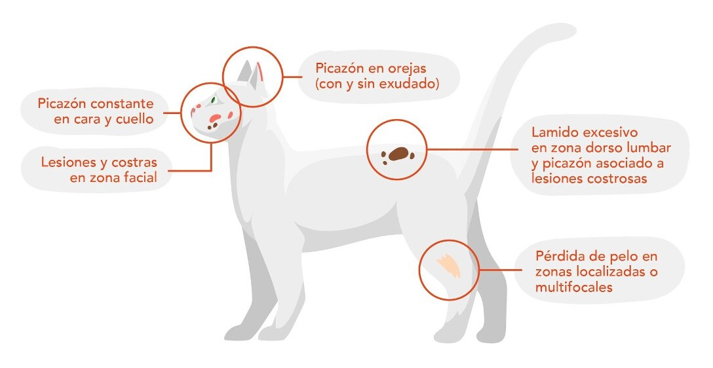
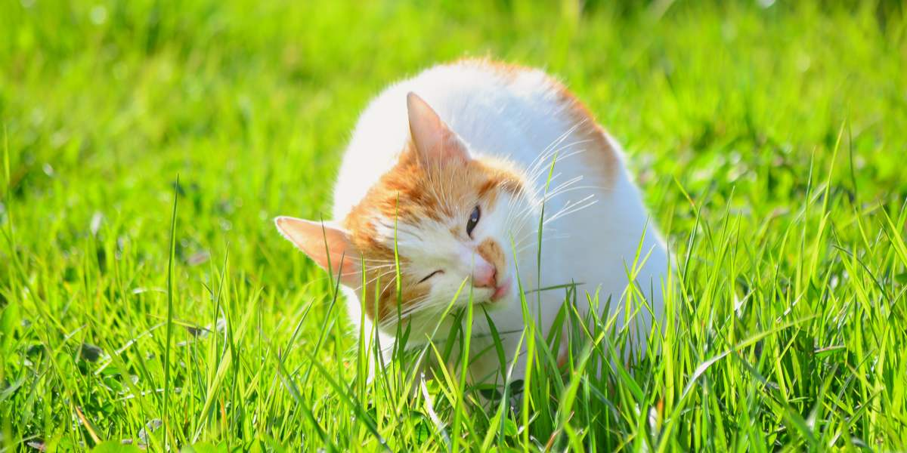

Se estima que los gatos son la segunda mascota mas popular en Argentina,
considerando que 8 de cada 10 familias argentinas tienen una mascota, la mayoria (el 63%) tienen
perros mientras que un 26% tienen gatos.
Contrario a los perros, muchos gatos son libres de ir y venir a su antojo. Esto hace que sea mas
dificil detectar cuando algo cambia en nuestros amigos gatunos, por eso es mucho mas dificil de
detectar
señales tempranas de que algo anda mal
Es por esto que vamos a mostrarte cuales son las enfermedades mas comunes encontradas en gatos.
Explicando como podemos identificarlas y que podemos hacer, tambien compartiremos tips para
mantener la salud de tus gatos en su mejor estado posible. En promedio, gatos domesticos llegan
a
vivir entre 12 a 18 años, sin embargo con atencion adecuada y un entorno seguro y saludable
pueden llegar a vivir hasta los 20 años o mas, por lo tanto el cuidado de su salud es esencial
en
sus vidas.
A continuacion, estos son las 8 condiciones mas comunes diagnosticadas en gatos
domesticos:
- Enfermedades dentales
- Obesidad
- Problemas dermatologicos
- Perdida de peso
- Soplo cardiaco
- Lesiones traumaticas
- Enfermedad renal
- Problemas gastrointestinales
1.Enfermedades dentales
Mas de un 70% de gatos y perros pasados sus 3 años de edad, suelen tener enfermedades dentales.
Naturalmente, su boca se encuentra llena de bacterias, que forman una capa en la superficie de
los dientes, mayormente conocido como "placa". Se puede remover usando un cepillo dental, pero
vuelve a formarse despues de unas horas. A medida que la placa progresa, se vuelve mas gruesa,
formando una placa conocida como calculo dental, que con el tiempo, causa inflamacion en las
encias
(conocido como gingivitis) y eventualmente, daña los ligamentos y los huesos que le dan soporte
a los dientes.
Algunos gatos pueden desarrollar una severa inflamacion en la boca, conocida como estomatitis
crónica.
Mayormente se lo relaciona con el virus de leucemia felina, Herpes, Inmunodeficiencia felina,
Calicivirus y
Herpes.
Los gatos tambien pueden desarrollar lesiones conocidas como FORLs (por sus siglas en ingles),
que
se traduce a Lesiones Resortivas Orales en Felinos,
esto causa la perdida gradual de los tejidos duros que cubren los dientes y puede afectar la
parte
visible del diente y la raiz de las encias. Los FORLs son dolorosos y los gatos afectados por
esta
condicion
suelen tener varios dientes afectados. los FORLs solamente afectan a gatos, y todavia no hay
explicacion de por que ocurre.
Los simtomas de las enfermedades dentales suelen incluir: Mal aliento, apetito reducido y el
rascado
frecuente de la cara con sus patas.
Los calculos dentales se pueden observar en la descoloracion amarilla en los dientes, mientras
que
la gingivitis
se ve como un enrojecimiento en las encias. Los FORLs se pueden observiar como agujeros en los
dientes, aunque
pueden ser dificiles de ver si el gato se encuentra inquieto o adolorido.
Es recomendado que se haga una cita con el veterinario para revisar la dentadura de tus gatos,
cada
6 o
12 meses. Si presenta alguna señal de enfermedad dental, pueden recomendar un procedimiento
dental,
que
junto a una pequeña dosis de anestesia, permite que los dientes puedan ser revisados y tratados.
A
su vez
si el gato posee una FORLs quizas se necesite remover el diente para prevenir el dolor.
2.Obesidad
La obesidad significa tener un exceso de grasa corporal que representa un riesgo para la salud.
Al igual que en las personas, la obesidad se relaciona con muchos otros problemas en nuestras
mascotas.
Las células grasas liberan varias hormonas y marcadores químicos, y como resultado, los gatos
obesos
sufren de
inflamación crónica que afecta a muchos sistemas corporales diferentes.
Los gatos con sobrepeso tienen un mayor riesgo de problemas articulares, enfermedades de las
vías
respiratorias,
diabetes, pancreatitis, bloqueo del tracto urinario y tienen una esperanza de vida más corta.
La obesidad es más común en los animales castrados.
La esterilización reduce la cantidad de energía (alimento) que su mascota necesita,
ya que el cuerpo ya no utiliza "energía reproductiva" para mantenerse fértil.
Es una idea equivocada común que la esterilización en sí misma causa aumento de peso o
evita la pérdida de peso, y no hay evidencia de esto.
El peso de su gato se puede evaluar observándolo y palpándolo.
Debería poder sentir sus costillas con facilidad y ver definición alrededor de la cintura cuando
están
de pie. Los gatos con sobrepeso a menudo carecen de energía; pueden pasar más tiempo durmiendo,
ser menos juguetones y pueden tener dificultades para subir escaleras o saltar.
El aumento de peso puede ocurrir gradualmente, así que considere si el comportamiento de su gato
ha cambiado en los últimos 6-12 meses.
Se recomiendan controles regulares de peso con un veterinario o una enfermera veterinaria para
evitar que los gatos se vuelvan obesos. Estos controles deben realizarse cada 6-12 meses,
pero puede recomendarse una frecuencia más alta en el primer año después de la esterilización.
Si su gato aumenta de peso, necesitará una reducción en la cantidad de comida para volver a
estar
saludable.
La pérdida de peso puede ser un proceso lento y debe hacerse de manera segura, por lo que se
recomienda encarecidamente
buscar el consejo de un veterinario o una enfermera veterinaria.
3.Problemas dermatologicos
Los problemas dermatológicos involucran la piel, el pelo y las uñas. Los problemas cutáneos más comunes observados en gatos domésticos están relacionados con infestaciones de pulgas y garras excesivamente largas.
Pulgas
Las pulgas son diminutos insectos de aproximadamente 3 mm de longitud que se alimentan de la
sangre de su gato. Las pulgas se encuentran principalmente en gatos y perros, pero también
pueden picar a los humanos. Aunque las pulgas no pueden volar, pueden saltar unos 20 cm en el
aire
y a una distancia de 30 cm.
Las picaduras de pulgas son picantes e incómodas, y los gatos pueden causarse más daño a la piel
al morderse y rascarse, lo que a menudo conduce a infecciones secundarias.
Muchos gatos son alérgicos a la saliva de las pulgas, por lo que experimentan una reacción mucho
más
grave. Incluso una
o dos picaduras pueden causar picazón intensa, que rápidamente conduce a llagas y costras en
todo
su pelaje. Esto se conoce como dermatitis alérgica por pulgas (DAP).
La prevención es mucho mejor que la cura, y recomendamos un tratamiento regular contra las
pulgas
para evitar el desarrollo de infestaciones.
Su veterinario podrá recetar un producto adecuado y asesorar sobre la frecuencia con la que debe
administrarse.
Garras excesivamente largas
Las garras de un gato son afiladas y están diseñadas para ayudarles a trepar y cazar.
Los gatos que pasan la mayor parte o todo su tiempo en interiores no desgastarán sus uñas.
Las garras continúan creciendo, y esto puede llevar a que las garras crezcan en forma redonda y
corten
las almohadillas de las patas.
Las garras encarnadas son muy dolorosas y pueden infectarse. Si tu gato no desgasta sus garras,
es posible que necesiten ser recortadas cada pocos meses para evitar que crezcan en exceso.
Esto puede ser realizado por una enfermera veterinaria, o estarán encantados de mostrarte cómo
hacerlo tú mismo en casa.
4.Perdida de peso
La pérdida de peso es un problema común en gatos mayores y generalmente es una señal de que algo
más
no está bien.
Puede que notes que tu gato se ve más delgado o se siente más delgado, o que está comiendo menos
de
lo normal.
Algunos gatos pueden perder peso a pesar de tener un apetito normal o aumentado. En primer
lugar,
asegúrate de que tu gato esté recibiendo la cantidad adecuada de comida y de que no haya razones
por
las que no pueda acceder a la comida normalmente, como otros gatos en la casa que comen más de
su
parte.
Si no hay una causa evidente para la pérdida de peso, se recomienda encarecidamente que lleves a
tu
gato a un veterinario.
Realizarán un examen físico y pueden aconsejar hacer un análisis de sangre para verificar el
funcionamiento
de los órganos. Existen muchas causas de pérdida de peso en gatos, incluyendo enfermedades
dentales,
enfermedad
renal, hipertiroidismo, enfermedad hepática y algunos tipos de cáncer.
La causa subyacente deberá identificarse antes de que se puedan considerar opciones de
tratamiento.
Los controles regulares de peso con un veterinario o una enfermera no solo son útiles para
prevenir
el aumento de peso, ya que al pesar a tu gato cada 6-12 meses permitirá detectar temprano la
pérdida
de peso y,
con suerte, un diagnóstico más temprano de la causa.
5.Soplo cardiaco
Un soplo cardíaco en gatos es un ruido anormal que se produce durante el ciclo cardíaco y se
escucha
cuando un
veterinario ausculta el corazón del gato con un estetoscopio. Este sonido es similar a un
murmullo
suave y
puede indicar un flujo sanguíneo turbulento a través de las cavidades cardíacas o las válvulas
del
corazón.
Los soplos cardíacos en gatos pueden ser causados por diversas razones, como defectos
congénitos,
enfermedades
cardíacas adquiridas o problemas en las válvulas cardíacas.
Es importante destacar que no todos los soplos cardíacos en gatos son necesariamente graves, y
el
tratamiento
y la gravedad dependerán de la causa subyacente. Los soplos cardíacos a menudo se detectan
durante
un examen
veterinario de rutina o cuando se investiga un problema de salud relacionado con el corazón.
Si se sospecha un soplo cardíaco en un gato, es fundamental que un veterinario realice una
evaluación
completa para determinar la causa y el tratamiento adecuado.
Los gatos con soplos cardíacos pueden no mostrar síntomas evidentes, y en muchos casos, los
soplos
cardíacos se detectan durante un examen veterinario de rutina.
Sin embargo, algunos gatos pueden presentar síntomas relacionados con problemas cardíacos.
Estos síntomas pueden incluir:
- Letargo o debilidad.
- Pérdida de apetito.
- Dificultad para respirar o jadeo.
- Tos.
- Desmayos o colapsos (en casos graves).
- Aumento de la frecuencia cardíaca.
Es importante recordar que estos síntomas no son específicos de los soplos cardíacos y pueden estar relacionados con diversas afecciones médicas. Si sospechas que tu gato podría tener un problema cardíaco debido a la presencia de estos síntomas, es esencial consultar a un veterinario para una evaluación adecuada y un diagnóstico preciso.
6.Lesiones traumaticas
Las lesiones traumáticas en gatos se refieren a daños físicos causados por un accidente, una caída, una pelea con otro animal, un atropello o cualquier evento que cause un impacto o lesión en el cuerpo del gato. Estas lesiones pueden variar en gravedad y pueden afectar diferentes partes del cuerpo. Algunos ejemplos de lesiones traumáticas en gatos incluyen:
- Heridas y cortes: Las mordeduras, arañazos y laceraciones son comunes en las peleas entre gatos u otros animales.
- Fracturas óseas: Los huesos rotos pueden ocurrir debido a caídas desde alturas, accidentes de tráfico o lesiones durante el juego.
- Trauma craneal: Golpes en la cabeza pueden causar conmociones cerebrales, hematomas o daños al cráneo.
- Trauma torácico y abdominal: Lesiones en el tórax o el abdomen pueden afectar órganos internos y causar hemorragias o daños en los pulmones u otros órganos.
- Lesiones en extremidades: Golpes o caídas pueden resultar en esguinces, luxaciones o fracturas en patas, garras o articulaciones.
El tratamiento de las lesiones traumáticas en gatos varía según la gravedad de la lesión. Es importante buscar atención veterinaria inmediata si se sospecha que un gato ha sufrido una lesión traumática. Los gatos pueden ocultar su dolor, por lo que es esencial que un veterinario realice una evaluación para determinar la extensión de la lesión y brindar el tratamiento adecuado, que puede incluir cirugía, medicación y cuidados posteriores. La prevención, como mantener a los gatos en un entorno seguro y supervisar su interacción con otros animales, puede ayudar a reducir el riesgo de lesiones traumáticas.
7.Enfermedad renal
La enfermedad renal en gatos, también conocida como insuficiencia renal felina o enfermedad renal crónica, es una afección común en gatos, especialmente en gatos mayores. Esta enfermedad implica un deterioro progresivo de la función de los riñones con el tiempo.
- Síntomas: Los gatos con enfermedad renal pueden mostrar síntomas como aumento de la sed y la micción, pérdida de peso, letargo, disminución del apetito y vómitos.
- Causas: Las causas pueden incluir envejecimiento, predisposición genética, infecciones, enfermedades autoinmunes y otros factores. A menudo, no se identifica una causa específica.
- Diagnóstico: Los veterinarios suelen diagnosticar la enfermedad renal a través de análisis de sangre y orina para evaluar los niveles de creatinina y nitrógeno ureico en sangre, así como otros marcadores.
- Tratamiento: El tratamiento puede incluir cambios en la dieta, medicamentos para controlar la presión arterial y reducir la proteína en la orina, y terapia de fluidos subcutáneos para mantener la hidratación. El tratamiento se adapta a la etapa de la enfermedad.
- Manejo a largo plazo: La enfermedad renal en gatos es crónica y no tiene cura. El objetivo principal del tratamiento es ralentizar su progresión y mejorar la calidad de vida del gato.
- Prevención: La prevención implica mantener una dieta equilibrada y asegurarse de que el gato esté bien hidratado. Las revisiones veterinarias regulares pueden ayudar a detectar la enfermedad en sus primeras etapas.
Es importante trabajar en estrecha colaboración con un veterinario para gestionar la enfermedad renal en gatos y proporcionarles el mejor cuidado posible, ya que es una afección común en gatos mayores.
8.Problemas gastrointestinales

Algunos gatos comen pasto de forma ocasional, y se cree que esto puede ayudarles con problemas
gastrointestinales,
las cuales son afecciones que afectan el sistema digestivo de estos animales.
Los gatos son carnívoros obligados, lo que significa que su dieta principal debe consistir en
carne. Sin embargo,
a veces ingieren pequeñas cantidades de pasto o plantas, ya que les ayuda a eliminar bolas de
pelo, regula el sistema digestivo
y complementa la falta de fibra en su dieta
Algunos ejemplos de estas afecciones son:
- Gastritis: La gastritis en gatos se refiere a la inflamación del revestimiento del estómago y puede ser causada por infecciones, ingestión de sustancias irritantes o alergias alimentarias. Los síntomas incluyen vómitos, pérdida de apetito y malestar estomacal.
- Colitis: La colitis es la inflamación del colon en gatos. Puede ser causada por infecciones, alergias o trastornos autoinmunes. Los síntomas incluyen diarrea, a veces con sangre, y dolor abdominal.
- Síndrome de intestino irritable (SII): El SII es un trastorno crónico del intestino que puede causar diarrea, estreñimiento y cambios en los hábitos de defecación. A menudo, no tiene una causa identificable.
- Pancreatitis: La pancreatitis en gatos es la inflamación del páncreas y puede ser aguda o crónica. Los síntomas incluyen vómitos, diarrea, pérdida de apetito y dolor abdominal.
- Obstrucciones intestinales: Los gatos pueden tragar objetos extraños que causan obstrucciones intestinales. Esto puede llevar a vómitos, diarrea, pérdida de apetito y dolor abdominal.
- Intolerancias alimentarias o alergias: Algunos gatos pueden desarrollar intolerancias o alergias a ciertos alimentos, lo que resulta en problemas gastrointestinales como vómitos y diarrea.
El diagnóstico y tratamiento de los problemas gastrointestinales en gatos dependen de la causa subyacente. Esto puede implicar cambios en la dieta, medicamentos, terapia de fluidos y, en casos graves, cirugía. Si tu gato muestra signos de problemas gastrointestinales, es importante consultar a un veterinario para determinar la causa y recibir el tratamiento adecuado.